Anwendungen der Physik in der Labormedizin
Prof. Dr. phil. nat. René Staritzbichler
22.10.26

Lernziele
- Abläufe der Labormedizin: Präanalytik, Analytik, Postanalytik
- Abläufe der Labormedizin: Präanalytik, Analytik, Postanalytik
Physik in der Medizin
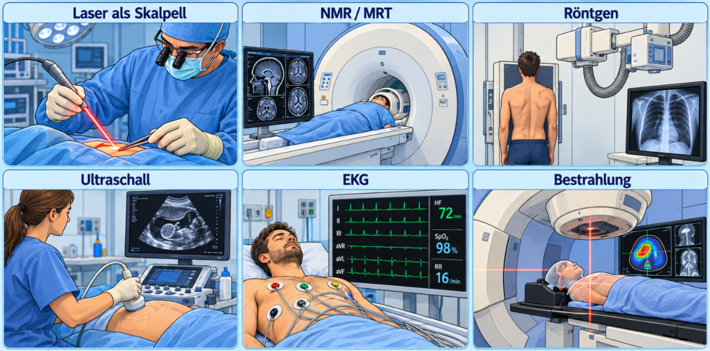
Diagnostik: Suche nach der Ursache
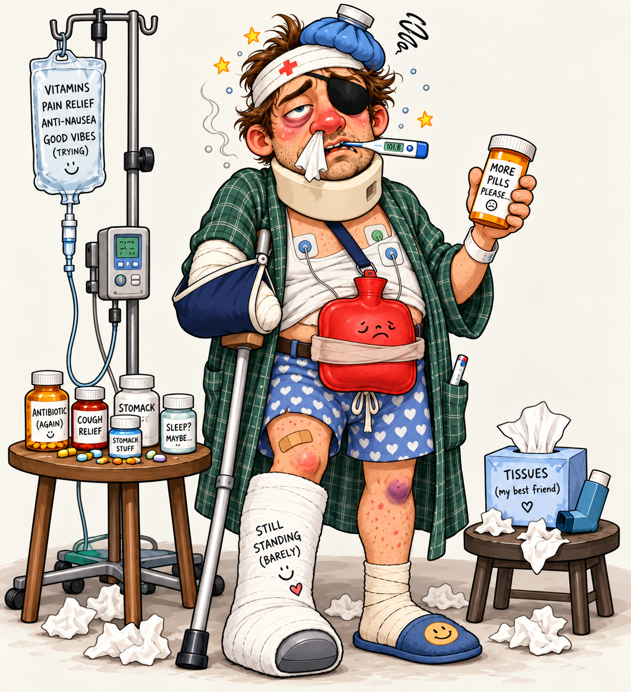
Schnupfen?
Diagnostische Fachrichtungen
- Radiologie
- Pathologie
- Labormedizin
Labormedizin: Hochzeit von Physik und Biochemie
Labormedizin
- Labormedizinische Diagnostik ist Grundlage von ca. 70% aller Behandlungsentscheidungen
- Hohe Präzision: Gummibärchen in \(10^9\) Litern (großer See)
- Hoher Automatisierungsgrad
- Hoher Grad an Qualitätssicherung
- Mehr als 1000 verschiedene Analyten
- Mehr als 2000 Proben pro Tag im Klinikum Detmold
- Untersucht werden Blut sowie zahlreiche andere Körperflüssigkeiten, Ausscheidungen und Abstrichmaterialien
Bereiche der Labormedizin
- Klinische Chemie
- Hämatologie
- Immunologie
- Transfusionsmedizin
- Mikrobiologie
- Molekulare Bestandteile
- Zelluläre Bestandteile
- Immunzellen und Botenstoffe
- Konserven und andere Produkte
- Erreger
Ablauf der Labormedizin
Von der klinischen Fragestellung bis zur Befundung
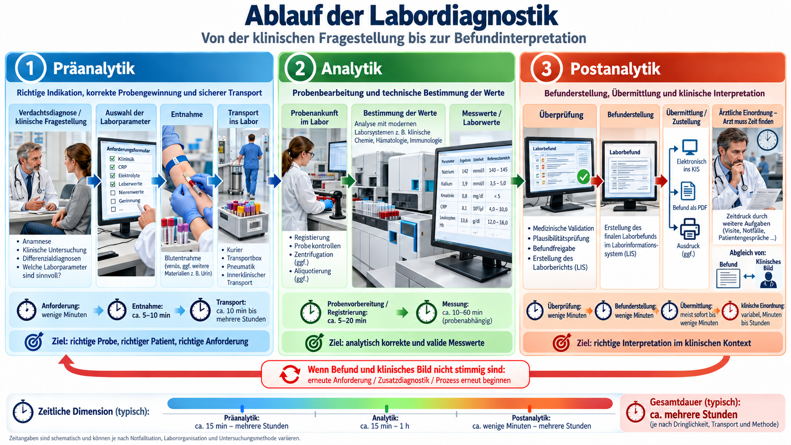
Verdachtsdiagnose ist eine frühe Weichenstellung
Mit dem Stellen der Anforderung werden frühzeitig diagnostische Weichen gestellt
Anforderungsformulare
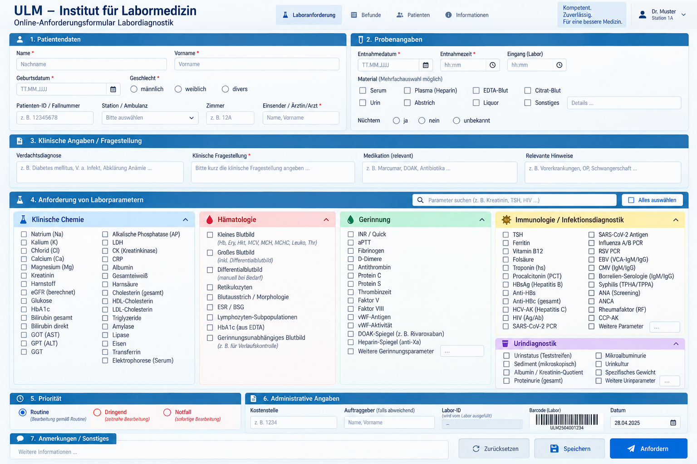
- Nur eines von vielen
- Kein Arzt kennt alle Parameter
Medizinisches Beispiel: Sepsis
Vor kurzem geht ein Kollege (Mitte 40) von uns in die Klinik und verstirbt.
Sepsis
- Ausbreitende Infektion (meist Bakterien, seltener Viren, Pilze, Parasiten)
- Eskalierende Immunantwort
- Ca. 240.000 Fälle pro Jahr in Deutschland
- 85.000 - 140.000 Todesfälle
- Überlebenswahrscheinlichkeit ca. 68%
Symptome einer Sepsis
- Plötzliche Wesensänderungen
- Bewusstseinstrübung, Verwirrtheit
- Fieber oder Schüttelfrost
- Starkes Krankheitsgefühl
- Erhöhte Atemfrequenz und Herzschlag
- Verringerter Blutdruck
- Verringerte Urinausscheidung
Spuren der Sepsis
- Erreger heranzüchten: Mikrobiologie
- Vermehrung und Aktivierung der Immunzellen: Blutbild
- Botenstoffe der Immunzellen: IL-6
- Entzündungsproteine: CRP
- Hormone: PCT
- Stoffwechselprodukte: Laktat
Zeitlicher Verlauf der Marker der Sepsis
- Rein schematisch
- Konkrete Verläufe werden stark abweichen
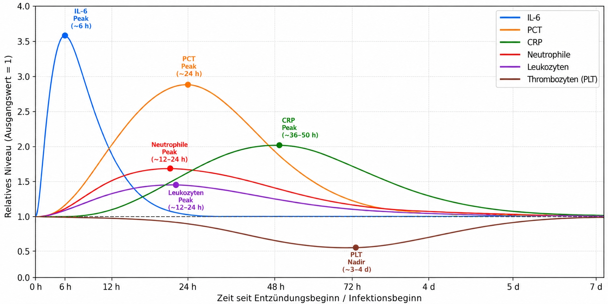
Laborparameter im Verlauf einer Sepsis
| Laborparameter | Verlauf | Erste Reaktion | Maximum / volle Ausprägung |
|---|---|---|---|
| TNF-α | ↑ | 0,5–1 h | 1–3 h |
| Interleukin-6 (IL-6) | ↑ | 1–2 h | 3–8 h |
| Procalcitonin (PCT) | ↑ | 3–6 h | 12–24 h |
| C-reaktives Protein (CRP) | ↑ | 4–8 h | 36–50 h |
| Serum-Amyloid A (SAA) | ↑ | 6–10 h | 24–48 h |
| Leukozyten | ↑ / ↓ | Erste Stunden | Kein festes Maximum; Tage |
| Neutrophile Granulozyten | ↑ / ↓ | Erste Stunden | Kein festes Maximum; Tage |
| Unreife Granulozyten | ↑ | ca. 8–20 h | ca. 24–48 h, variabel |
| Lymphozyten | ↓ | Erste 24 h | Oft nach 1–2 Tagen deutlich ↓ |
| Fibrinogen | ↑ / ↓ | 24–48 h | Oft nach 2–3 Tagen erhöht |
| Thrombozyten (PLT) | ↓ | Erste Tage | Nadir oft Tag 4–5* |
| D-Dimere | ↑ | Früh bei Aktivierung | Kein festes Maximum |
| INR / aPTT | ↑ | Stunden bis Tage | Kein festes Maximum |
| Laktat | ↑ | Minuten bis Stunden | Kein festes Maximum |
| Kreatinin | ↑ | 24–72 h | Abhängig von Nierenschädigung |
| Bilirubin | ↑ | Häufig nach Tagen | Kein festes Maximum |
| Albumin | ↓ | Stunden bis 1–2 Tage | Kein festes Minimum |
Methoden im Detail
- Klinische Chemie: Photometrie
- Blutbild: Impedanz, Durchflusszytometrie
- Immunoassays: Photometrie, Fluoreszenz oder Chemilumineszenz
- Blutgasanalyse: Potentiometrie, Amperometrie
- Auftrennung: Chromatographie und Elektrophorese
Spektroskopie - eigene Vorlesung
- Raman-, IR-, UV/VIS-Spektroskopie
- Massenspektrometrie
- Kernspinresonanzspektroskopie
Klinische Chemie
- Biochemische Reaktion mit genau einem Analyten
- Reaktion ändert die Lichtdurchlässigkeit
- Extinktion ist proportional zur Konzentration
- Konzentration wird photometrisch bestimmt
Photometrie
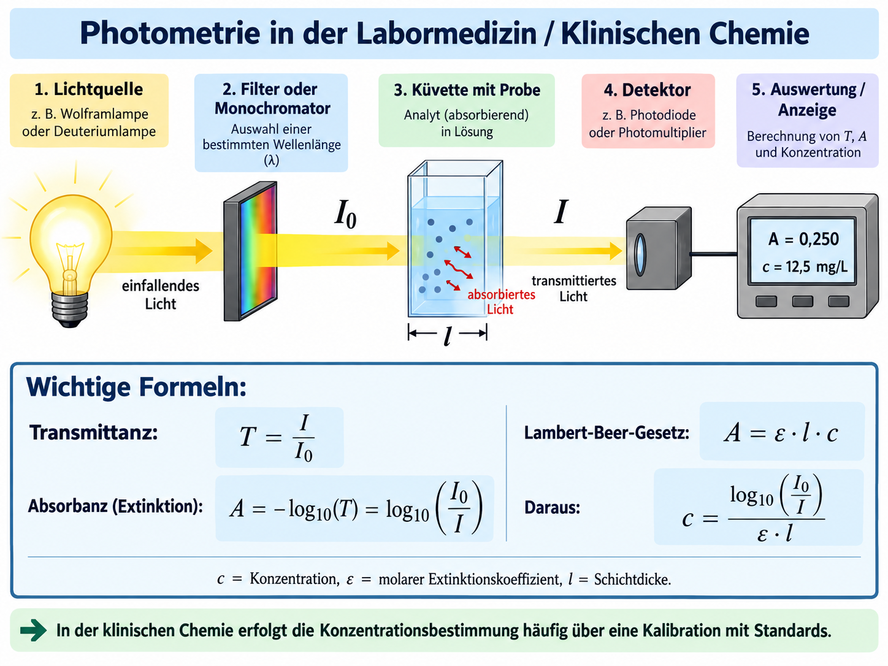
Bestimmung von CRP und IL-6
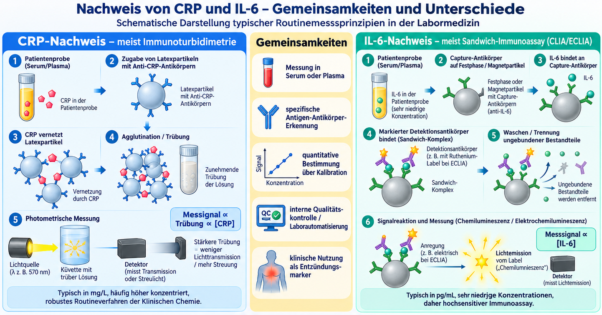
PCT wird analog zu IL-6 bestimmt
Photometrische Bestimmung kritischer Proben
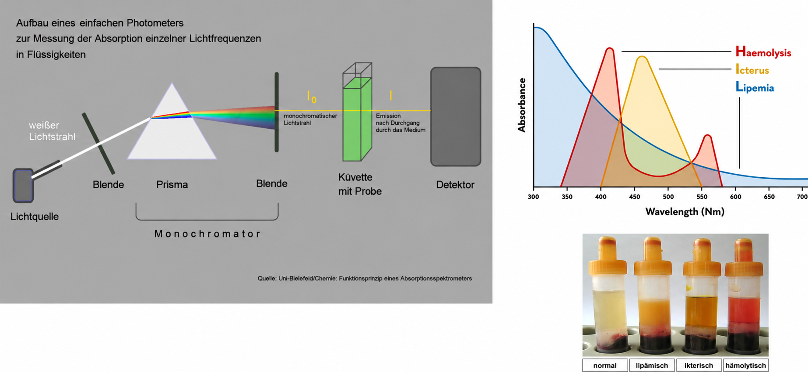
- HIL-positive Proben verzerren klinische Chemie
- Wurden bis vor kurzem manuell bestimmt
Blutbild
- Zelluläre Bestandteile
- Kleines Blutbild: Anzahl, Volumen, Varianz
- Großes Blutbild: Differenzierung verschiedener Leukozyten
Kleines Blutbild: Impedanz
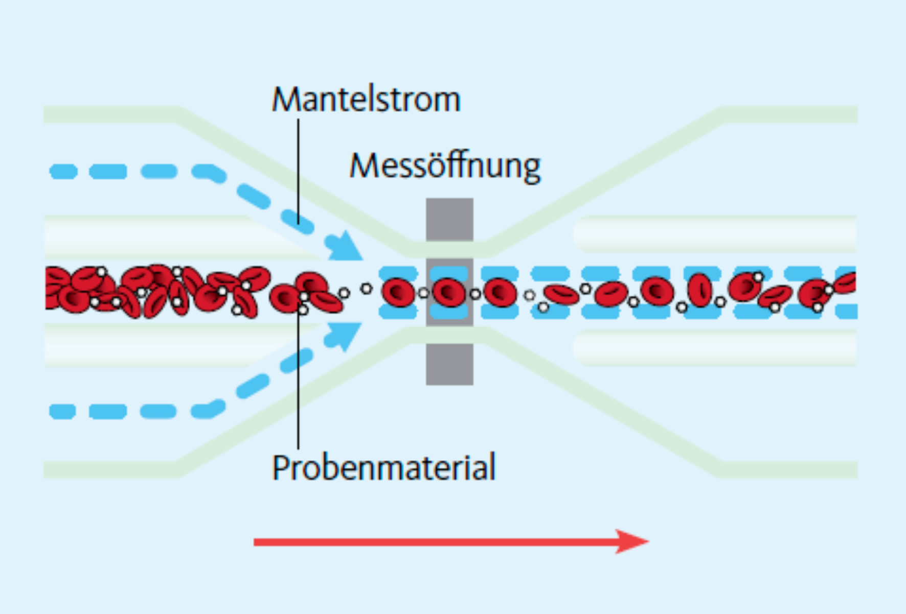
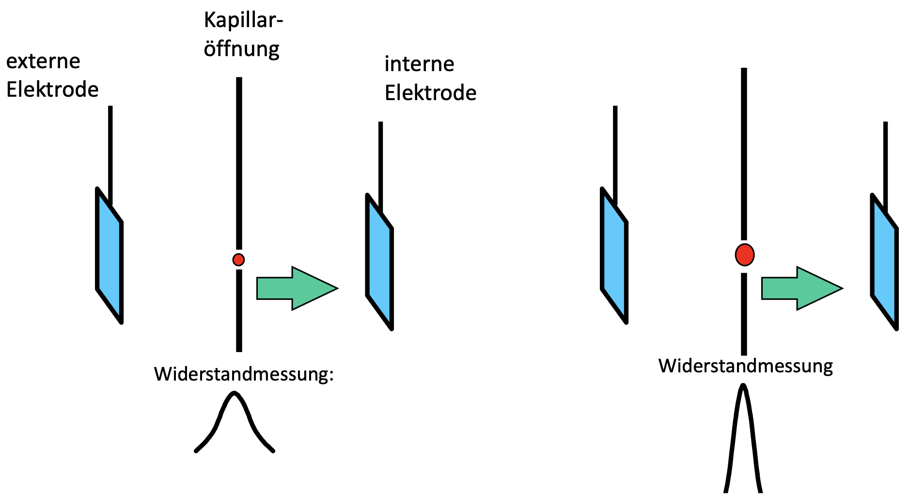
Höhe des Impedanzsignals ist proportional zu Volumen der Zelle
Impedanzmessung
Unterscheidung Erythrozyten und Thrombozyten
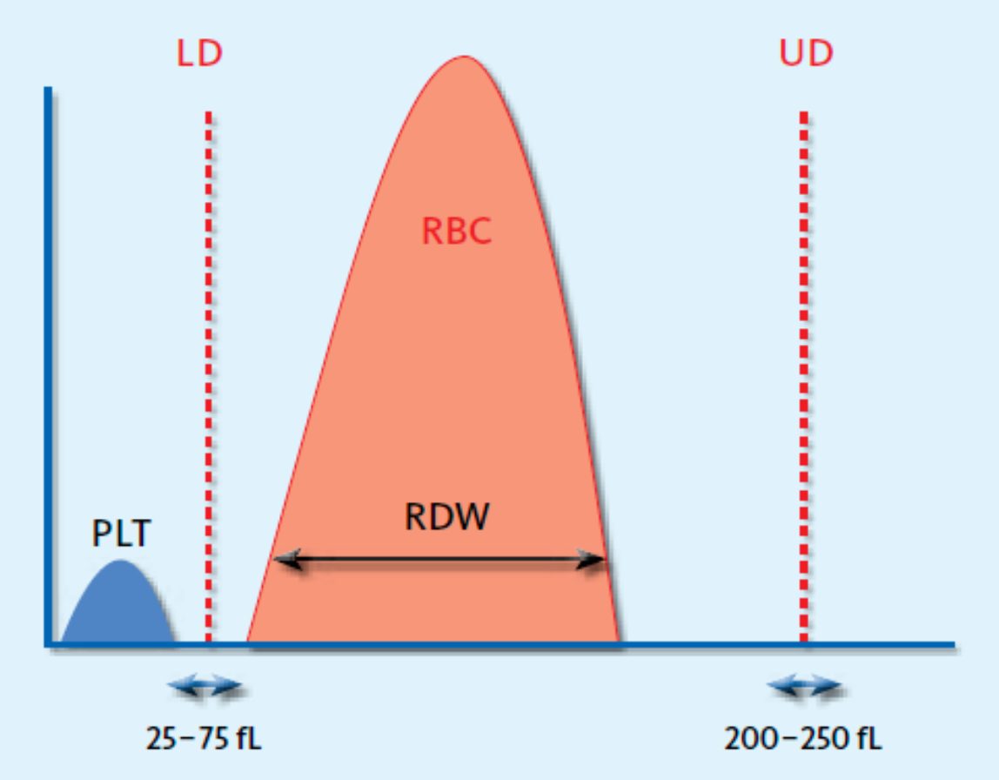
Großes Blutbild: Immunzellen
- Durchflusszytometrie
- Mikroskopie
Sichtbarmachung
- Antikörper mit Fluoreszenzfarbstoff binden an Oberflächenrezeptoren (Durchflusszytometrie)
- Färbung der Zellkerne durch Lysierung und Bindung der Farbstoffe an RNA (Mikroskopie)
Durchflusszytometrie
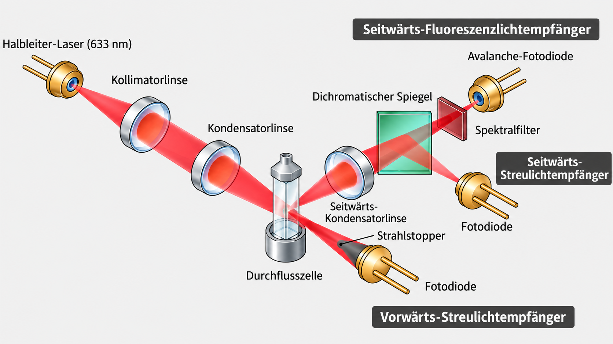
Unterscheidung von Leukozyten
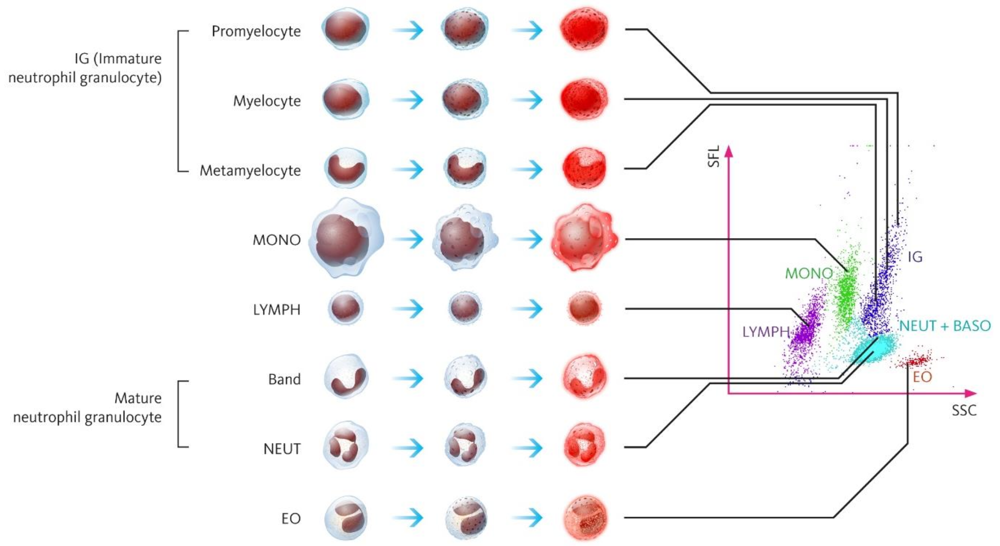
Differenzierung von Inflammationsmustern
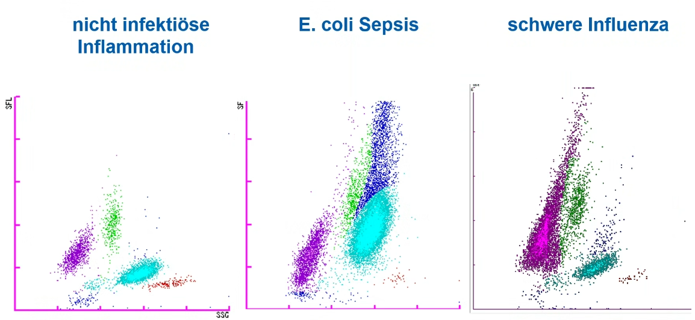
Wolken im Differentialblutbild
- Violett: Lymphozyten
- Grün: Monozyten
- Türkis: Granulozyten
- Blau: Unreifen Granulozyten
- Rot: Eosinophile Granulozyten
Reife der roten Blutzellen
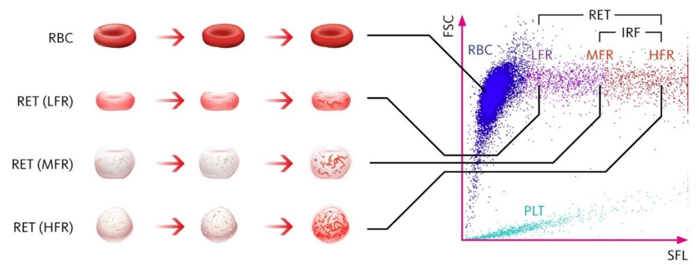
Aktivierung von Immunzellen
Immunzellen verschiedener Zelltypen und Reifegrade unterscheiden sich im Muster und in der Expressionsstärke ihrer Oberflächenrezeptoren (CD-Marker).
Fluoreszenzmarkierte Antikörper binden spezifisch an diese Marker. Über die Fluoreszenzsignale können Zellpopulationen in Scattergrammen unterschieden und Aktivierungszustände erkannt werden.
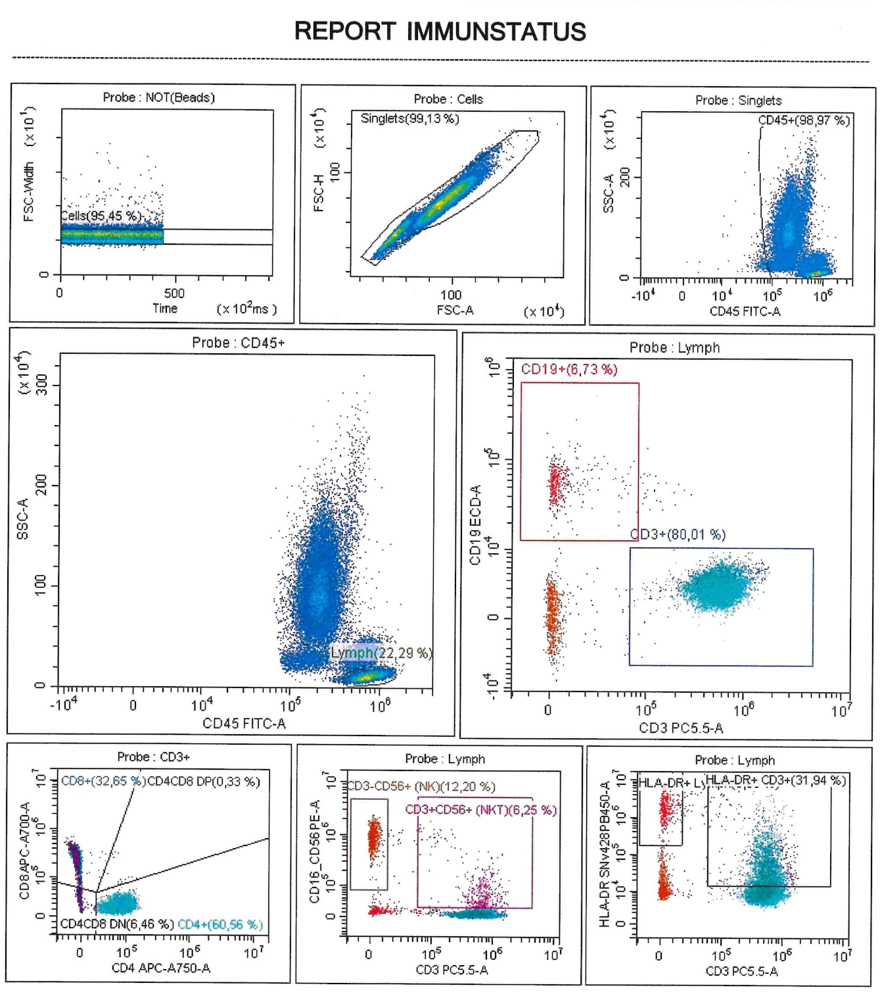
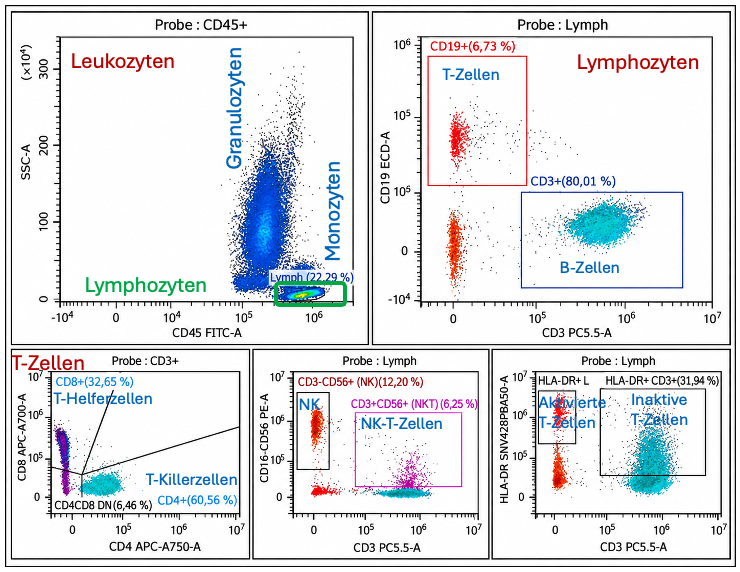
Auftrennung und Sortierung
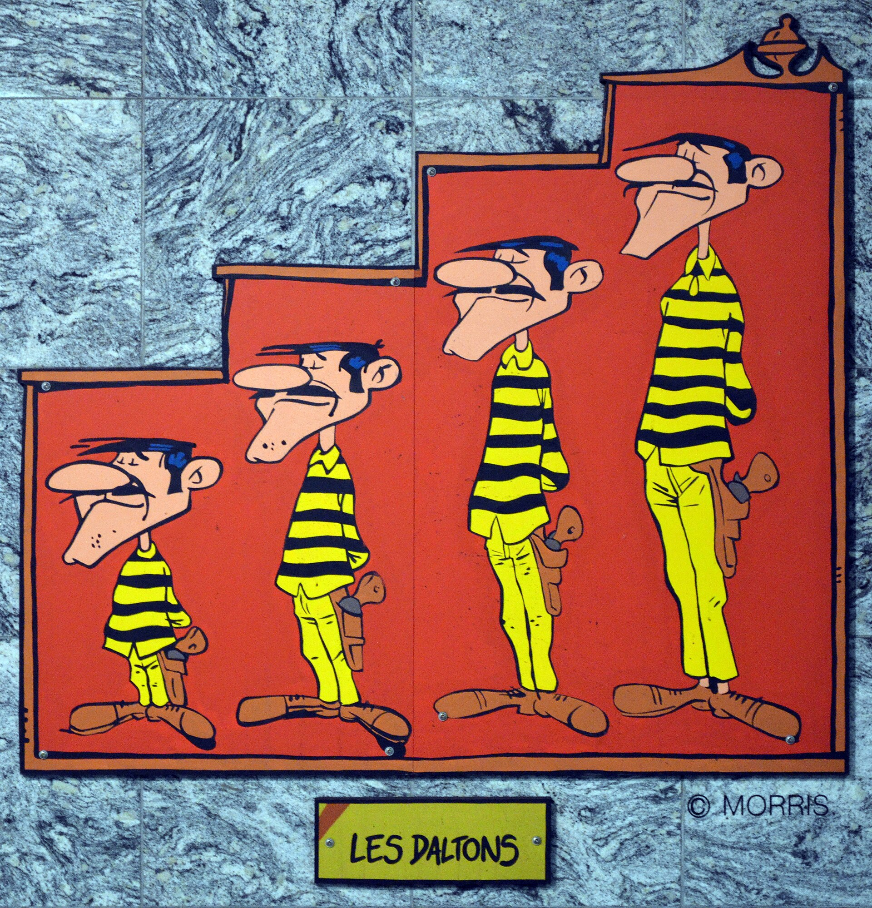
Chromatographie und Elektrophorese
| Chromatographie | Elektrophorese | |
|---|---|---|
| Hauptprinzip | Verteilung eines Stoffes zwischen mobiler und stationärer Phase | Wanderung geladener Moleküle im elektrischen Feld |
| Trennkriterien | Polarität, Ladung, Größe, Affinität | vor allem Ladung und Größe |
| Typische Analyte | kleine Moleküle bis Proteine | vor allem Proteine und Nukleinsäuren |
| Anwendungen | HbA1c, Medikamente, Hormone, Metabolite | Serumproteine, Paraproteine, Hämoglobinvarianten |
| Typische Kopplung | Massenspektrometrie, z. B. LC-MS/MS oder GC-MS | Immunfixation, photometrische Detektion |
Blutgasanalyse – Messprinzipien
| Messmodus | Was wird untersucht? | Physikalisches Prinzip |
|---|---|---|
|
pH Potentiometrie |
Säure-Basen-Status | Eine Glaselektrode entwickelt abhängig von der H+-Aktivität eine elektrische Potentialdifferenz. Die Spannung folgt näherungsweise der Nernst-Gleichung. |
|
pCO₂ Severinghaus-Elektrode |
CO₂-Partialdruck → respiratorische Ventilation |
CO₂ diffundiert durch eine gasdurchlässige Membran und verändert den pH einer Elektrolytlösung. Diese pH-Änderung wird potentiometrisch gemessen. |
|
pO₂ Clark-Elektrode |
O₂-Partialdruck → Oxygenierung |
Sauerstoff diffundiert durch eine Membran und wird an einer Elektrode elektrochemisch reduziert. Der dabei entstehende elektrische Strom ist proportional zum pO₂ (Amperometrie). |
|
Elektrolyte Na⁺, K⁺, Ca²⁺, Cl⁻ |
Elektrolyt- und Ionenhaushalt | Ionenselektive Elektroden (ISE) besitzen Membranen, die bevorzugt bestimmte Ionen binden bzw. passieren lassen. Das resultierende Membranpotential wird potentiometrisch bestimmt. |
|
CO-Oximetrie Hb, O₂Hb, COHb, MetHb |
Hämoglobinkonzentration und verschiedene Hämoglobinformen | Die verschiedenen Hb-Formen absorbieren Licht bei unterschiedlichen Wellenlängen verschieden stark. Durch Mehrwellenlängen-Photometrie werden ihre Konzentrationen aus dem Absorptionsspektrum bestimmt (Lambert-Beer-Gesetz). |
|
Metabolite Glucose, Lactat |
Stoffwechsel und Gewebeperfusion | Enzymatische Biosensoren wandeln den Analyt enzymatisch um. Dabei entsteht oder verbraucht sich eine elektrochemisch messbare Substanz; der resultierende Strom wird amperometrisch bestimmt. |
Mechanismen der Blutgasanalyse
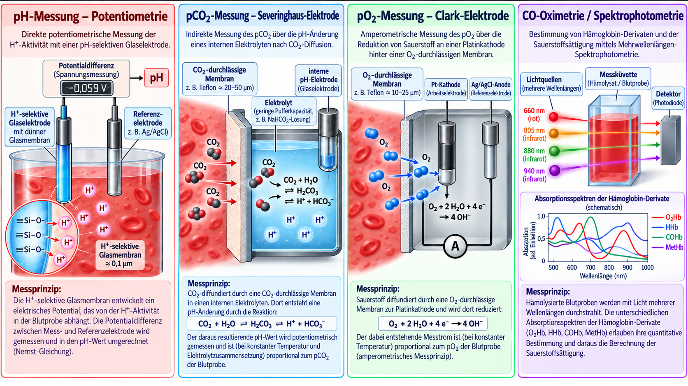
Zusammenfassung
- Klinische Chemie: Photometrie
- Blutbild: Impedanz, Durchflusszytometrie
- Immunoassays: Photometrie, Fluoreszenz oder Chemilumineszenz
- Blutgasanalyse: Potentiometrie, Amperometrie
- Auftrennung: Chromatographie und Elektrophorese
Ausblick folgender Vorlesungen
- DAISY - digitales Alarm und Informationssystem
- Raman-, IR-, UV/VIS-Spektroskopie
- Massenspektrometrie
- Kernspinresonanzspektroskopie
Ende gut, alles gut
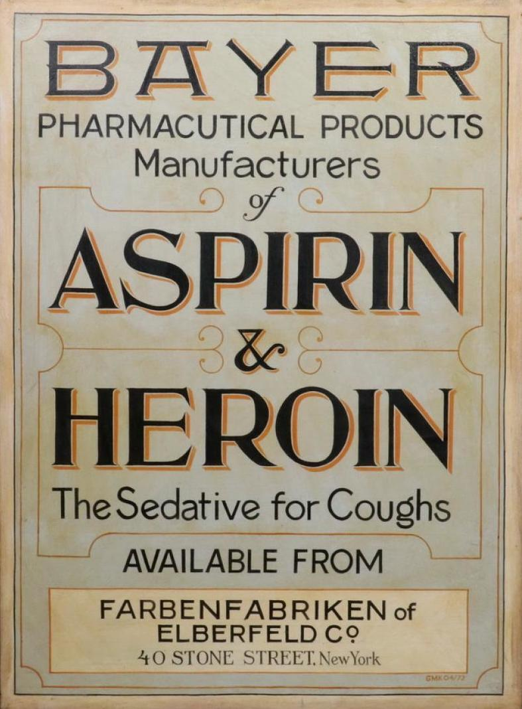
Jeder macht mal Fehler...